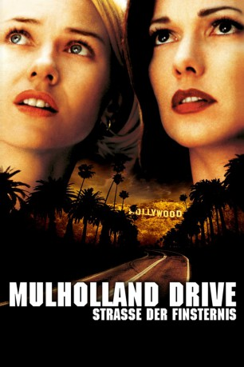
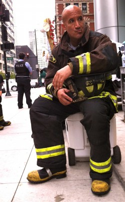

#2737 Mulholland Drive
Auszeichnungen: für 1 Oscars nominiert 1 BAFTA-Awards gewonnen
 
 IMDB-Wertung: 8.0 / 10
IMDB-Wertung: 8.0 / 10  Metascore: 83
Metascore: 83 
Nach einem Unfall irrt eine junge Frau, die ihr Gedächtnis verloren hat, durch das nächtliche Hollywood und findet Unterschlupf in einem Appartement, das von der jungen Schauspielerin Betty bewohnt ist. Diese will in Hollywood Karriere machen, erklärt sich aber bereit, der verstörten Schönheit bei der Suche nach ihrem düsteren Geheimnis zu helfenrnrn. Eine irrwitzige Fahrt voll emotionaler Intensität und eine Story, die sich immer tiefer ins Mysteriöse bewegt.
Jahr: 2001
Dauer: 146 Minuten
FSK: 16
Land: Frankreich Studio: Concorde FilmverleihTonspuren: DTS - ,
Untertitel:
Auflösung: 1080p (1920x1040) Größe: 10342 MB
Genre: Thriller, Drama, Mystery
Regisseur:  David Lynch
David Lynch
Drehbuch: David Lynch
Soundtrack: Angelo Badalamenti
Darsteller:
 Naomi Watts als Betty / Diane Selwyn
Naomi Watts als Betty / Diane Selwyn Laura Harring als Rita / Camilla Rhodes
Laura Harring als Rita / Camilla Rhodes Robert Forster als Detective McKnight
Robert Forster als Detective McKnight Brent Briscoe als Detective Domgaard
Brent Briscoe als Detective Domgaard Patrick Fischler als Dan
Patrick Fischler als Dan- Michael Cooke als Herb
 Bonnie Aarons als Bum
Bonnie Aarons als Bum- Michael J. Anderson als Mr. Roque
- Sean Everett als Cab Driver at LAX
- Ann Miller als Coco
- Angelo Badalamenti als Luigi Castigliane
 Dan Hedaya als Vincenzo Castigliane
Dan Hedaya als Vincenzo Castigliane Justin Theroux als Adam
Justin Theroux als Adam- David Schroeder als Robert Smith
- Marcus Graham als Mr. Darby
 Melissa George als Camilla Rhodes
Melissa George als Camilla Rhodes-  Mo Gallini als Castigliane Limo Driver
 Mark Pellegrino als Joe
Mark Pellegrino als Joe- Vincent Castellanos als Ed
- Rena Riffel als Laney
- Michael Des Barres als Billy
- Lori Heuring als Lorraine
- Billy Ray Cyrus als Gene
- Missy Crider als Waitress at Winkies
 Tony Longo als Kenny
Tony Longo als Kenny Katharine Towne als Cynthia
Katharine Towne als Cynthia- Lee Grant als Louise Bonner
- Monty Montgomery als Cowboy
- Kate Forster als Martha Johnson
 James Karen als Wally Brown
James Karen als Wally Brown- Chad Everett als Jimmy Katz
 Wayne Grace als Bob Booker
Wayne Grace als Bob Booker- Michele Hicks als Nicki Pelazza
- Elizabeth Lackey als Carol
 Brian Beacock als Backup Singer #1
Brian Beacock als Backup Singer #1- Blake Lindsley als Backup Singer #2
- Michael Fairman als Jason
- Richard Green als The Magician
- Conte Candoli als Trumpet Player
- Rebekah Del Rio als Herself
 Scott Coffey als Wilkins
Scott Coffey als Wilkins- Thea Samuels als Dancer
- Elina Madison als Starlet , uncredited
- Desi Singh als First Cab Driver , uncredited
- Jeanne Bates als Irene
- Dan Birnbaum als Irene's Companion
- Randall Wulff als Limo Driver
- Maya Bond als Aunt Ruth
- Joseph Kearney als Roque's Manservant
- Enrique Buelna als Back of Head Man
Datei: X:\2001\Mulholland Drive (2001, FSK16, 1920x1040).mkv seit 09.12.2015
Festplatte: HD 1996-2002
 Es gibt insgesamt 102 Filme in der Gruppe '2001'
Es gibt insgesamt 102 Filme in der Gruppe '2001'